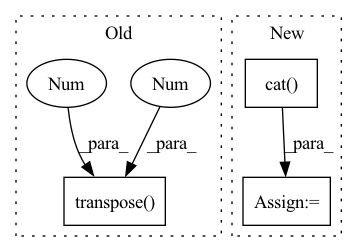

Pattern ID :929
Before Change
x_a = self.gru_a(x_a)
return torch.cat((x_v, x_a), dim=-1)
else:
x = x.squeeze().transpose(1 , 2 )
if self.backend == "gru":
x = self.gru(x)
return x
After Change
return torch.cat((x_v, x_a), dim=-1)
else:
x = x.squeeze()
x = torch.cat( (x, se, au), dim=1)
if self.backend == "gru":
x = self.gru(x.transpose(1, 2))
return x
In pattern: SUPERPATTERN
Frequency: 3
Non-data size: 3
Instances Fragment ID: 2853131
Project Name: sailordiary/m3f.pytorch
Commit Name: 28fb92b9fb6baef398c39171656cd4ad581068b5
Time: 2020-02-05
Author: me@sailorzhang.com
File Name: models/backbone.py
M Class Name: VA_3DVGGM_Split
N Class Name: VA_3DVGGM_Split
M Method Name: forward(4)
N Method Name: forward(2)
M Parent Class: nn.Module
N Parent Class: nn.Module
M File Name: models/backbone.py
N File Name: models/backbone.py
M Start Line: 229
M End Line: 242
N Start Line: 228
N End Line: 243
Before Change
// Back to batch first
attn_scores = torch.stack(attn_scores).transpose(0, 1)
mel_outputs = torch.stack(mel_outputs).transpose(0, 1).contiguous()
stop_tokens = torch.stack(stop_tokens).transpose(0 , 1 ) .squeeze(2)
// (B, T", mel_dim*r) -> (B, T, mel_dim)
mel_outputs = mel_outputs.reshape(B, -1, self.mel_dim)After Change
// To tensor
mel_outputs = torch.cat(mel_outputs, dim=1) // (B, T_decoder, mel_dim)
attn_scores = torch.cat( attn_scores, dim=1) // (B, T_decoder/r, T_encoder)
stop_tokens = torch.cat(stop_tokens, dim=1) // (B, T_decoder)
// Validation check Fragment ID: 2853132
Project Name: thuhcsi/tacotron
Commit Name: fea9ec535ec373aad564646f4f292fbee0217c29
Time: 2021-03-18
Author: johnson.tsing@gmail.com
File Name: model/tacotron.py
M Class Name: Decoder
N Class Name: Decoder
M Method Name: forward(4)
N Method Name: forward(4)
M Parent Class: nn.Module
N Parent Class: nn.Module
M File Name: model/tacotron.py
N File Name: model/tacotron.py
M Start Line: 87
M End Line: 187
N Start Line: 88
N End Line: 180
Before Change
// Back to batch first
attn_scores = torch.stack(attn_scores).transpose(0, 1)
mel_outputs = torch.stack(mel_outputs).transpose(0, 1).contiguous()
stop_tokens = torch.stack(stop_tokens).transpose(0 , 1 ) .squeeze(2)
// (B, T", mel_dim*r) -> (B, T, mel_dim)
mel_outputs = mel_outputs.reshape(B, -1, self.mel_dim)After Change
break
// To tensor
mel_outputs = torch.cat( mel_outputs, dim=1) // (B, T_decoder, mel_dim)
attn_scores = torch.cat(attn_scores, dim=1) // (B, T_decoder/r, T_encoder)
stop_tokens = torch.cat(stop_tokens, dim=1) // (B, T_decoder)
Fragment ID: 2853123
Project Name: thuhcsi/tacotron
Commit Name: fea9ec535ec373aad564646f4f292fbee0217c29
Time: 2021-03-18
Author: johnson.tsing@gmail.com
File Name: model/tacotron2.py
M Class Name: Decoder
N Class Name: Decoder
M Method Name: forward(4)
N Method Name: forward(4)
M Parent Class: nn.Module
N Parent Class: nn.Module
M File Name: model/tacotron2.py
N File Name: model/tacotron2.py
M Start Line: 127
M End Line: 224
N Start Line: 127
N End Line: 216